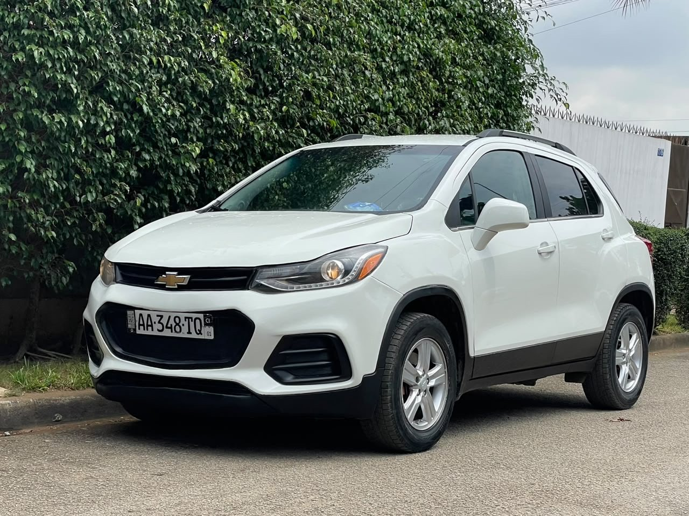

Rapide rapideOccasion locale
Chevrolet Trax 2019–2020
2019–2020, à confirmer · Essence · Automatique · 62 000 miles (≈99 779 km)
5 500 000 FCFA
Année annoncée2019–2020, à confirmer
Kilométrage arrondi62 000 miles (≈99 779 km)
CarburantEssence
Moteur4 cylindres
BoîteAutomatique
Transmission annoncéeOption 4×4
SiègeÉlectrique
ClimatisationOK
DocumentsPapiers à jour
Occasion locale. Moteur ordinaire, climatisation OK, option 4×4, siège électrique et papiers à jour selon le vendeur. Le compteur photographié indique 62 364 miles ; la valeur affichée dans l’annonce est arrondie à 62 000 miles.
Disponibilité, kilométrage, équipements et documents à confirmer avec le propriétaire lors de la visite.